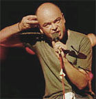

Quiero seguir a ti, flor de las flores,
siempre descir cantar de tus loores,
non me partir de te servir,
¡mejor de las mejores!
De la "Cantiga de loores de Santa María"
Una de las típicas e inútiles encuestas de La Nación.
A la pregunta: " ¿Qué debería hacer el nuevo gobierno ante las presiones del FMI por la suspensión de las ejecuciones hipotecarias?". Las respuestas (más de 3000) entre las cuatro opciones se reparten así:
- No ceder en su posición: 45.26 %
- Negociar una solución alternativa: 36.93 %
- Vetar la prórroga aprobada por el Congreso: 16.78 %
- No sabe: 1.03 %
mathworld.wolfram.com, el "Eric Weisstein's world of Mathematics, es una especie de enciclopedia de matemáticas on line, bastante completa, seria y activa. El dominio (Wolfram) corresponde a los creadores de Mathematica, uno de los programas líderes en matemáticas (simbólica sobre todo).
Entre la multitud de cosas curiosas que uno puede encontrar, ayer topé con esto:
- "Sister Celine's Method": el método de la hermana Celina.
La "hermana" Celina ? Qué es esto ? Será una monja ?
Pues... resulta que sí ...
(continuará; y no, no se trata de religión, se trata de matemáticas, nomás)
En realidad, este post se iba a limitar a recomendar a la atención de los interesados (matemáticos) un libro que bajé un poco por accidente; supuestamente era una obra del gran D. Knuth, en realidad sólo es el prologador. Pero el libro me resultó -a vuelo de pájaro- muy interesante y se puede bajar libremente. Se llama A=B y los autores (desconocidos para mí) son Marko Petkovsek, Herbert Wilf y Doron Zeilberger.
En el libro figura la mención al método de "la hermana Celina", -Sister Mary Celine Fasenmyer- y más que eso: le da mucha importancia a su obra, como la pionera en el tema que trata el texto, y hasta le dedica una breve biografía. Y como pueden ver en la página, el libro está dedicado a su memoria.
Una biografía más completa, siempre en el contexto científico,
es ésta.
Brevemente: Nació en 1906 en EEUU, de familia católica,y entró
monja con las "Hermanas de la Misericordia" a los 27 años (al parecer,
una orden "activa", dedicada a la enseñanza, la asistencia a enfermos, etc.).
Como la hermana Celina era buena en matemáticas (ya tenía su título
universitario), la mandaron a hacer un posgrado (además de dar clases!),
después hizo un doctorado en matemáticas. Presentó su tesis en
1946 y después sólo publicó dos papers. Y eso fue todo.
Su obra pasó desapercibida, mientras ella se dedicó a la enseñanza.
Recién en 1978 Zeilberger desenterró su obra,
y después junto con Wilf armaron toda una teoría (o metodología)
de cierta importancia (leer el libro y el
prólogo de Knuth ...)
y reconocieron a la hermana Celina como la pionera.
Después Wilf logró, a modo de homenaje, encontrarla
y presentarla en un congreso de matemáticas en 1994.
-
In the midst of this success, however, Wilf did not forget Sister Celine. An enthusiastic amateur pilot, he flew to Erie where she lived in a Catholic retirement home and invited her to attend an upcoming mathematical conference in Boca Raton. Hearing no reply in the following weeks, Wilf flew down to Florida -- only to discover that Sister Celine had received a travel grant from the diocese and was in attendance.
When he introduced her from the audience, the 87-year-old nun slowly rose to her feet. She said she had only two remarks to make. First, she wanted to thank Professor Wilf for the invitation. And second, she said, casting a level gaze at the assemblage of distinguished mathematicians, "I want you all to know -- I really did that work."
"There wasn't a dry eye in the house," Wilf says.
Clarín informa y educa. (Terminada la lección, verificará que los lectores aprendieron mediante una "encuesta" on line).
- "Una jueza ordenó prohibir los medicamentos anticonceptivos"
Clarín invita a la indignación en todo lo que sigue.
La jueza "actuó representando (?) la organización 25 de marzo" (horror!)
presidida por un cura (horror!).
Pero no hay que desesperar: como anuncia (o incita) en el subtítulo, "se organizan protestas",
"escraches" y "acciones".
La siniestra jueza "ingresó en un laberinto" (??? ... no sería "un callejón sin salida" ?).
Un diputado del partido socialista
pedirá la remoción de la jueza (esssa!)
Y todos los buenos están unidos:
ONGs, socialistas, sindicatos y -para que vean que
somos amplios y tolerantes- "un grupo de mujeres
que se reunieron en el local de Católicas por Derecho a Decidir"....
forma tortuosa de no decir nada... (en realidad, sí).
Para que no queden dudas
de qué lado están los buenos y de qué lado los malos
(no sea cosa que a alguien se le ocurra averiguar quiénes cornos
son estas "católicas por derecho a decidir") Clarín desliza:
"Es evidente que en el Juzgado de Garzón,
las organizaciones católicas conservadoras hallaron una ventana favorable". Conservadores son los católicos
que se oponen al aborto, claro está.
En fin, nada nuevo.
Pero hay un lapsus divertido, fruto de la misma retórica
culposa y sucia.
Al periodista le duele tener que
desmentir su propio título impactante...
y así, cuando tiene que "aclarar" qué significa eso
de "medicamentos anticonceptivos", lo hace de
mala gana y se arma un lío:
-
La medida [...] alcanza a todos los antiabortivos [...]
Del santoral de hoy: Santa Rita de Cassia (1381-1457). Patrona de las causas difíciles (o imposibles...).
Religiosa de la orden agustina; esposa y madre sufrida primero:
-
...Desde sus primeros años, la santa demostraba constantemente su piedad y su deseo de consagrarse a la vida religiosa; su mayor gusto era dedicarse a la oración y a la caridad fraterna con el prójimo. Sin embargo, por decisión y obediencia a sus padres, Santa Rita contrajo matrimonio.
El esposo de la santa resultó ser una persona de carácter difícil y sumamente violento que constantemente agredía y humillaba a Santa Rita; sin embargo, ella soportó el genio feroz de este hombre por 18 años, con la más exquisita paciencia, sin quejarse, sin recurrir a autoridades civiles para pedir sanciones y ofreciendo todo este lento martirio por la conversión de los pecadores y entre ellos, el primero, su malgeniudo esposo, y luego sus dos hijos, que también habían heredado el malgenio de su padre. ...
Acá hay una novena.
Se la representa con una herida en la frente, estigma que recibió de una espina de la corona de Jesús.
Recién pasé por mi iglesia parroquial; tiene su imagen allí, una estatuita de cera (cercana a Teresita). Hoy estaba llena de flores, y con varias velas encendidas.
Ayer me di una vuelta, de paso, por la Iglesia (Basílica, en rigor) de Nuestra Señora del Rosario, en el barrio de San Telmo (Belgrano y Defensa), de los dominicos.
En el fondo, como puede verse -apenas- acá, hay una linda reproducción (en mosaicos, creo) de la Coronación de la Virgen de Fra Angelico.
(Según me entero ahora, el altar mayor -incluyendo esa reproducción, es de creer- fue reconstruido tras una "destrucción" en junio de 1955; es de creer que se trata de los "incidentes" de los últimos tiempos de la segunda presidencia de Perón; felix culpa, es de creer...)
Aunque ya es un poco tarde, tal vez a alguno le interese la información que encontré: en el Convento de Santo Domingo (ahí mismo, entrando por calle Venezuela 395) se está dictando un curso de "Introducción a las Sagradas Escrituras", por fray Patricio Battaglia (nuestro anfitrión cuando, hace algunos años, hicimos una reunión de la Asociación Tolkien allí, recuerdo!); los martes a las 19:30, desde el 22 de abril al 24 de junio.
Me había quedado pendiente -para variar- de un post de hace tiempo, el tema de qué significa la expresión "creer en el nombre de Jesucristo" (en lugar de simplemente "creer en Jesucristo").
El domingo pasado se leyó en misa este texto impresionante de la primera carta de San Juan:
- 18 Hijos míos, no amemos de palabra ni de boca,
sino con obras y según la verdad.
19 En esto conoceremos que somos de la verdad, y tranquilizaremos nuestra conciencia ante Él,
20 en caso de que nos condene nuestra conciencia, pues Dios es mayor que nuestra conciencia y conoce todo.
21 Queridos, si la conciencia no nos condena, tenemos plena confianza ante Dios,
22 y cuanto pidamos lo recibimos de él, porque guardamos sus mandamientos y hacemos lo que le agrada.
23 Y este es su mandamiento: que creamos en el nombre de su Hijo, Jesucristo, y que nos amemos unos a otros tal como nos lo mandó.
24 Quien guarda sus mandamientos permanece en Dios y Dios en él; en esto conocemos que permanece en nosotros: por el Espíritu que nos dio.
Juntamos esto, pues, con algunas cosas que mandaron lectores: Ricardo Maqueira, me aporta su opinión:
-
Esa expresión se encuentra no sólo en San Juan sino también en el himno que está en
la carta a los Filipenses "Por eso Dios lo engrandeció y le dio el Nombre que está
sobre todo nombre..." (2,9).
En la Biblia, el nombre designa la esencia de la persona y la voluntad de Dios sobre ella.
En este caso, creer en el Nombre no es solo en la filiación divina de Jesús sino en su naturaleza humana.
También es la idea de que ahora, después de la muerte y resurrección de Jesús, a diferencia del Antiguo Testamento, a Dios se lo puede nombrar: Jesucristo. Creer en el nombre de Jesús es afirmar el Kerigma: Jesús es el Señor.
Alejandro me trae algunos párrafos del Catecismo que hacen referencia al "Nombre" de Jesucristo:
- 452 El nombre de Jesús significa "Dios salva". El
niño nacido de la Virgen María se llama "Jesús" "porque él salvará a su pueblo de
sus pecados" (Mt 1, 21); "No hay bajo el cielo otro nombre dado a los hombres por
el que nosotros debamos salvarnos" ((...) Hch 4, 12).
453 El nombre de Cristo significa "Ungido", "Mesías". Jesús es el Cristo porque "Dios le ungió con el Espíritu Santo y con poder" (Hch 10, 38). Era "el que ha de venir" (Lc 7, 19), el objeto de "la esperanza de Israel"(Hch 28, 20).
454 El nombre de Hijo de Dios
significa la relación única y eterna de Jesucristo con Dios su Padre: el es el Hijo
único del Padre (cf. Jn 1, 14. 18; 3, 16. 18) y él mismo es Dios (cf. Jn 1, 1).
Para ser cristiano es necesario creer que Jesucristo es el Hijo de Dios (cf. Hch 8,
37; 1 Jn 2, 23).
455 El nombre de Señor significa la soberanía divina. Confesar
o invocar a Jesús como Señor es creer en su divinidad "Nadie puede decir: "¡Jesús
es Señor!" sino por influjo del Espíritu Santo"(1 Co 12, 3).
-
209 Por respeto a su santidad el pueblo de Israel no pronuncia el Nombre de Dios. En la lectura de la Sagrada Escritura, el Nombre revelado es sustituido por el título divino "Señor" ("Adonai", en griego "Kyrios"). Con este título será aclamada la divinidad de Jesús: "Jesús es Señor".
2812 Finalmente, el Nombre de Dios Santo se nos ha revelado y dado, en la carne, en Jesús, como Salvador (cf Mt 1, 21; Lc 1, 31): revelado por lo que él ss, por su Palabra y por su Sacrificio (cf Jn 8, 28; 17, 8; 17, 17-19). Esto es el núcleo de su oración sacerdotal: "Padre santo ... por ellos me consagro a mí mismo, para que ellos también sean consagrados en la verdad" (Jn 17, 19). Jesús nos "manifiesta" el Nombre del Padre (Jn 17, 6) porque "santifica" él mismo su Nombre (cf Ez 20, 39; 36, 20-21). Al terminar su Pascua, el Padre le da el Nombre que está sobre todo nombre: Jesús es Señor para gloria de Dios Padre (cf Flp 2, 9-11).
432 El nombre de Jesús significa que el Nombre mismo de Dios está presente en la persona de su Hijo (cf. Hch 5, 41; 3 Jn 7) hecho hombre para la redención universal y definitiva de los pecados. El es el Nombre divino, el único que trae la salvación (cf. Jn 3, 18; Hch 2, 21) y de ahora en adelante puede ser invocado por todos porque se ha unido a todos los hombres por la Encarnación (cf. Rm 10, 6-13) de tal forma que "no hay bajo el cielo otro nombre dado a los hombres por el que nosotros debamos salvarnos" (Hch 4, 12; cf. Hch 9, 14; St 2, 7).
233 Los cristianos son bautizados en "el nombre" del Padre y del Hijo y del Espíritu Santo y no en "los nombres" de estos (cf. Profesión de fe del Papa Vigilio en 552: DS 415), pues no hay más que un solo Dios, el Padre todopoderoso y su Hijo único y el Espíritu Santo: la Santísima Trinidad.
También me llama la atención ahora que las expresiones "bautizar en el nombre del Padre y del Hijo y del Espíritu" por un lado y "bautizar en el nombre de Jesucristo" por el otro, parecen ambas correctas; mientras que, de acuerdo a lo anterior, la expresión "bautizar en el nombre del Hijo" sería teológicamente objetable ... O sea que "el nombre de Jesucristo" no refiere específicamente a la segunda persona de la Trinidad, sino a Dios uno (es decir, a la "naturaleza divina") ? Mmm.... aguas demasiado profundas para mí.
En fin, todo lo anterior es un rejunte desordenado que pide una síntesis, pero trato de hacerla yo, probablemente la embarre. Quede así, pues... al menos por ahora.
-
...
—Usted debe ser muy feliz, ¿verdad Kirilov?
—Sí, lo soy —asintió el interpelado, como quien da la más común de las respuestas.
—Sin embargo, hace poco tiempo estaba usted muy triste y enojado con Liputin.
—Hum… Ahora no me quejo de él. Entonces ignoraba que era feliz. ¿Se ha fijado alguna vez en la hoja de un árbol?
—Sí.
—Yo vi hace poco una amarilla, con sólo restos de verdor, podrida por los bordes. Se la llevaba el viento. A la edad de diez años, en invierno cerraba los ojos y me imaginaba una hoja verde, reluciente, con todos sus tendones, y el sol brillaba. Abría luego los ojos y no daba crédito a lo que veía, porque la otra visión era muy buena. Y de nuevo los cerraba.
—¿Qué es eso, una alegoría?
—No… ¿Por qué? No se trata de una alegoría, sino simplemente de una hoja. Una hoja está bien. Todo está bien.
—¿Todo?
—Todo. El hombre es desdichado porque no sabe que es feliz; sólo por eso. Ahí se encierra todo, todo! El que se percata de ello, se vuelve feliz inmediatamente, en ese mismo instante. Esa suegra se morirá, y la niña seguirá viviendo. Todo está bien dispuesto. Lo descubrí de pronto.
—¿Y también está bien dispuesto que alguien se muera de hambre o que alguien ultraje y deshonre a una niña?
—También eso. El que se destroce la cabeza por un niño, hará bien, y el que no se la destroce, igual. Todo está bien, todo. Los que saben esto viven a gusto. Si todos supieran que les va bien, les iría bien, pero mientras no lo sepan les irá mal. Ahí radica todo el pensamiento, todo, y no existe ningún otro!
—¿Cuándo se enteró usted de que era tan feliz?
—La semana pasada, el martes; no, el miércoles, pues era de noche y ya había llegado el miércoles.
—¿Cómo lo supo?
—No recuerdo. Iba paseando por la habitación… Pero da igual. Detuve el reloj a las dos y treinta y siete minutos.
—¿En señal de que el tiempo debía detenerse?
Kirilov guardó silencio.
—Son malos —siguió luego— porque no saben que son buenos. Cuando lo sepan no violarán a las niñas. Necesitan enterarse de que son buenos, y entonces, todos, desde el primero al último, se volverán buenos.
—Usted ya se ha enterado. ¿Eso quiere decir que es bueno?
—Sí, lo soy.
—Dicho sea de paso, coincido en ello —murmuró Stavroguin, frunciendo el ceño.
—Quien enseñe que todos somos buenos pondrá fin al mundo.
—Quien lo enseñó fue crucificado.
—Vendrá a nosotros, y su nombre será el de hombre Dios.
—¿No el de Dios hombre?
—No, sino el de hombre Dios. Hay diferencia.
...
Fedor Dostoyevsky - "Los Demonios "
Entre la multitud de emails basura (spamming) en mi casilla, el Subject de uno de ellos reza: "Get paid for your opinion".
Qué lindo, que a uno le pagaran por opinar... los argentinos seríamos ricos.
Pero creo que, cada vez que opinamos, no sólo no ganamos absolutamente nada; acaso más bien perdemos algo.
No me caía muy simpática -con su tonito integrista-militante-preconciliar- pero tenía algunas cosas ...
Alguien sabe que pasó con cristiandad.org ?
- "La Tristeza es el juego más tramposo del diablo..."
Lo citó el cura, insólitamente, en el sermón de la misa de hoy.
El indulto anunciado hoy tiene todas mis simpatías. (Como no soy político ni hombre público, puedo decirlo sin miedo al repudio de nuestra ciudadanía, sin costos políticos).
Simpatía -apoyo si quieren- tan inútil e irresponsable como los "votos" de las votaciones de Clarín; y casi tan falible como ellos. Conozco muy poco de lo que hoy se llama "política", ni de las culpas de Gorriarán y de Seineldín, y de las motivaciones de Duhalde. Pero en cambio puedo confiar más en que tengo razón en la medida en que me opongo el rechazo de la mayoría (al menos de la mayoría que forma opinión).
Porque ese rechazo es ciego para ver cosas más elementales, como la naturaleza humana, las pasiones políticas; incluso el sentido histórico de la misma expresión "preso político" (que hasta hace poco tenía otras connotaciones, al punto que todo preso político merecía estar libre, por default).
No deja de asombrarme la frivolidad con que tantísimos
juzgan que tal o cual persona merece -por ejemplo-
estar presa.
Y cuando recuerdo la calidad de la indignación que yo mismo
exhibía en los tiempos de las leyes de Obediencia Debida
y Punto Final, me dan ganas de vomitar.
Patricia Walsh se opone porque el hecho de indultar
al mismo tiempo a -hablando mal y pronto-
un facho y un zurdo parece abonar la "teoría de los dos demonios".
Todo preso político de izquierda, en el peor de los casos, se equivocó;
el de derecha, es un golpista hijo de puta. [*]
Dicho en verso: Los demonios son los otros / los buenos somos nosotros.
(Por otro lado, es graciosa la disculpa de la causa montonera: el
respeto a las instituciones !).
Igual, el palo de Patricia Walsh no es para mi gallinero; sería más bien
para los que se oponen por principio al indulto, los que
están tan convencidos de las culpas de los otros (y de la inocencia propia).
Yo, más que creer
en una teoría de dos demonios, creería en una teoría de cero demonios
e infinitos imbéciles.
A lo sumo, creería en "demonios" en el sentido de Dostoyevsky.
[*] PD: Una de "las Madres" lo dijo ayer, con un candor y una objetividad propiamente maternal: «Entre los errores de los amigos (por Gorriarán) y los crímenes del enemigo, nos quedamos con los amigos».
Hace muuuucho tiempo leí un reportaje a Luca Prodan—un icono del rock argentino— donde le preguntaban qué era lo mejor que le había dado su actividad musical.
 Y el tipo, que ya venía fabricando su leyenda de loco-genio-exaltado-sublime-zarpado, y teniéndola servida para contestar algo memorable, dio una respuesta abyectamente humilde.
(Luca había hecho su versión rockera de
Años ("El tiempo pasa...") de Pablo Milanés, y hacía poco
se había juntado con el cubano para cantarla.)
Lo mejor,
dijo, es que la música
le había permitido hacer amigos; juntarse con gente
de distintos ambientes
(y citó el ejemplo del mismo Pablo Milanés) que de otra manera no habría
conocido.
Me llamó la atención, en su momento (al punto de recordarlo
todavía...; aunque la respuesta no sonó a nada memorable,
de hecho para mí lo fue).
Y, ahora lo veo... no está nada mal.
Y -mutatis mutandi- ... uno podría decir algo parecido.
Recibí ayer dos mails largos, de esos inteligentes e interesantes de leer (al punto que los imprimí), sobre temas muy diferentes (uno sobre el blog, otro no) de dos personas muy diferentes (una conocida personalmente, otra no), con tonos muy diferentes...
Son de esos mails que uno recibe, con suerte, uno por semana; y estos vinieron juntos, con diez minutos de diferencia. Y los dos -en contexto y uso muy diferente- usan la expresión "mirarse el ombligo".
Acabo de fijarme si ombligo tenía número en la quiniela, pero no...
Si alguien dice "Yo lamento profundamente las torturas, desapariciones , etc que cometió tal gobierno militar/derechista; porque eso ha dado argumentos al bando contrario, para ponerse como los buenos de la película" ... si alguien dice eso en el ambiente cultural estándar, es automáticamente repudiado, insultado y despreciado. Esas cosas estuvieron mal porque estuvieron mal, nomás; lamentarlas en primer lugar por sus consecuencias políticas, es una canallada y un signo de bajeza moral.
Bien.
Pero si alguien dice "Yo lamento profundamente las ejecuciones de Fidel Castro porque eso da argumentos a Estados Unidos", saca patente de persona comprometida en la lucha contra el mal.
Acabo de leer recién dos veces esta muestra típica de la idolatría -y la ceguera- al uso; en un escritor de renombre y en un weblog.
La verdad, me parece menos malo idolatrar a un ser (sea el buey Apis, Quetzalcoatl, o Eva Perón) que idolatrar una ideología.
Titular de tapa de Clarín :
-
"Una ola de descubrimientos reaviva la quimera de vencer al mal de Alzheimer".
En el idioma de nuestros periodistas, parece que es algo así como "esperanza".
Dándole una vuelta de tuerca, uno podría decir que tiene su lógica,
que en ese mundo de desesperados (en el sentido teológico de la palabra)
"esperanza" sea sinónimo de quimera. Y en todo caso, es estremecedora
esa conjunción de palabras que quedó casualmente estampada y archivada,
para que Google la indexe en estos días:
"La quimera de vencer al mal".
Que Página 12 -el medio argentino masivo de los Hombres Socialmente Sensibles- tenga, entre las secciones que tienen todos los diarios (Economía, Sociedad, Deportes...) una titulada Placer, me parece un símbolo de la esencia de la izquierda. (Sí... podemos agregar que Infobae por su lado tiene una titulada "Shopping" ... pero eso es un poco más trivial).
Me repito, sí, y cito otra vez a la (lamentablemente desaparecida) "Parte de Guerra":
-
...Lo que todos quieren es disfrutar de las "cosas lindas" que disfrutan los ricos, todos quieren ser parte de la fiesta.
Este es el bienestar material y a eso ha quedado reducido el deseo: a consumir las brillantes zanahorias que el capitalismo produce.
... La izquierda puede aceptar que la revolución debe atender al deseo humano, pero siempre después de resolver las situaciones "materiales" más críticas. No se da cuenta que de esa manera nunca saldrá de la lógica capitalista-consumista; como tampoco que en todo auténtico acto anticapitalista las "necesidades básicas" siempre están después de eso otro que llamamos deseo.
La posición izquierdista tradicional tiene una ventaja -que es su peor defecto-: cree saber qué desea el hombre. Así no sólo no cuestiona la política deseante capitalista sino que, más aún, la hace suya. ...
PD: Ricardo me aporta: la penúltima página de Ambito Financiero está dedicada exclusivamente a fotos de mujeres que ofrecen sus servicios; y si uno se fija, son dos o tres direcciones de mails (o sea: agencias).
De un lado o de otro, los apóstoles de la libertad , mercaderes de esclavos (y ellos mismos esclavos).
Dicen que un obispo hablaba con otro, de las dificultades que tenía para llevar adelante su diócesis.
- Con los sacerdotes, tengo un montón de problemas, pero los podemos reducir a dos... El primero, que me faltan veinte sacerdotes. El segundo... que me sobran treinta.
PD: No tiene nada que ver (o sí), pero hoy cumple 83 años el Papa.
Los jinetes del apocalipsis se titula la nota de Clarín sobre el show de uno de esos grupitos inflados del rock de por acá:
-
...confirmó su poderío extremo...
... iba del bajo y la computadora que le esperaban en un escenario a la palanca con sensibilidad infrarroja conectada a otra computadora...
cuentan experiencias en primera persona, relacionadas con sentir la música en carne propia ...
...en este show pentafónico, esas experiencias se vuelven realidad para cientos de cuerpos en un estado que parece de evangelización física.
Eso es rock; eso vive...
(acaso también en el sentido hormonal ... pero una cosa va de la mano con la otra).
De paso: hoy se lee en el evangelio de misa aquello de los sarmientos que no dan fruto, que se cortan y se queman.
Camassia trae, en los últimos días, varios posts interesantes -críticos, nada autoindulgentes ni apologéticos, thought provoking- sobre qué significa "creer en la resurrección" de Cristo, en qué medida esto se asimila -o debe asimilarse- a la creencia científica en un hecho histórico cualquiera, etc.